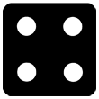
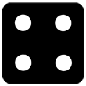

Virtual Dice Roller


 
Non-Conventional Dice Roller
Use the following virtual dice roller to mimic dice that have a different number of faces from the conventional 6-faced die. The most common physical dice have 4, 6, 8, 10, 12, and 20 faces respectively, with 6-faced die comprising the majority of dice. This virtual dice roller can have any number of faces and can generate random numbers simulating a dice roll based on the number of faces and dice.
A dice is typically a small, throwable object that has multiple faces (most commonly six) and possible positions that indicate a number (or something else), used for generating random numbers and events. They are typically used for tabletop games, which include a wide variety of games, as well as for gambling. Examples of tabletop games that involve the use of dice include games like backgammon, Boggle, and Yahtzee, where dice are a central component of the game. Some other well-known tabletop games include Monopoly, Risk, Dungeons and Dragons, and Settlers of Catan. There are however, numerous others.

Dice shapes
The most commonly used dice shapes are shown in the image, and listed below.
- Tetrahedron: 4 faces – the blue die
- Cube: 6 faces – the orange, cubic die
- Octahedron: 8 faces – the green die
- Pentagonal trapezohedron: 10 faces – the orange, non-cubic die
- Dodecahedron: 12 faces – the yellow die
- Icosahedron: 20 faces – the purple die
Although the image shows some of the more common die shapes, there are many other polyhedral dice, or dice of other shapes. There are also non-numeric dice, dice that do not follow a counting sequence that begins at one, and spherical dice.
How random is a dice?
Based on probability, a die should have an equal probability of landing on each of its faces. However, this is not necessarily the case with mass produced dice as they cannot be truly random, since it is difficult to mass produce dice that are uniform, and there may be differences in the symmetry of the dice. Each dice, particularly d20 (20-sided polyhedral dice) and d8 (8-sided polyhedral dice) is often unbalanced, and more likely to roll certain numbers.
How to test how random your dice is:
Although it may not be the most accurate way to test how random your dice is, one relatively quick test you can do involves just a container, some water, and some salt:
- Get a container that can fit the die you want to test
- Fill the container with water, then add salt and the die to the water – if the die doesn't float, add more salt until the die floats
- Flick the die and take note of which side faces upwards – repeatedly flick the dice and record the results
For a well-balanced die, you can expect a variety of numbers. If it is not well balanced, you will be more likely to notice certain numbers occurring more often. However, unless this test is performed numerous times, or the dice is heavily unbalanced, the user is not likely to notice a significant difference.
There are a number of companies that manufacture dice, and some more rigorous tests (than the one described above) have been performed on dice manufactured by different companies in an effort to determine how truly random the dice (mostly d20 dice) are. These studies confirmed that even dice manufactured within the same company under the same conditions could vary significantly from each other, and are not truly random. Some companies produced dice that were more random than others, but even then, they were not found to be truly random.
Virtual dice, like the one above, are almost always based on pseudo-random number generating algorithms, which are also not truly random. However, a virtual dice roll is likely more close to true randomness than most physical dice.